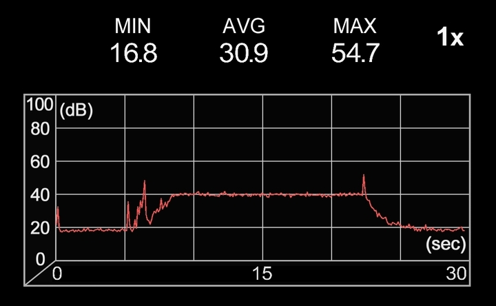

author: niplav, created: 2019-05-22, modified: 2023-08-24, language: english, status: in progress, importance: 3, confidence: other
Short texts on different topics.
Das Immer-wieder-von-vorn-anfangen ist die regulative Idee des Spiels (wie der Lohnarbeit).
—Walter Benjamin, “Über einige Motive bei Baudelaire“, 2023, link mine
If something isn't long enough to be its own article (yet…) and it is neither ethics- nor politics- or pickup-related, I put it here.
Many people want to learn everything (Drexler 2009, Young 2008). This poses a significant challenge, and begins with the problem of figuring out what “everything” is supposed to contain.
One possible method one could use to get an overview of everything is to use Wikipedia's Contents:Outlines: it contains a list of all outlines on Wikipedia, and is well structured. Wikipedia is generally concise and complete enough to provide a sufficient overview over a topic (see Tomasik 2017). To read this collection of outlines completely, one could use the following method:
Read Wikipedia's Contents:Outlines from top to bottom. If a link is a link to a Wikipedia article, open it and read it, without opening any further links. If a link leads to an outline, open the link and recursively apply the same procedure to the outline. If an article is opened a second time, it can be discarded. Lists can also be ignored. (This is basically applying depth-first search, though without a success condition).
This method results in a corpus of considerable size. For a shorter approach, you could also just read all vital articles.
Moved to Notes on Pickup.
Moved to Notes on Ethics.
The idea of a Great Filter (see also Hanson 1998) proposes that we do not observe aliens because in the development of intelligent life, there is one or more obstacles that obliterate the developing societies before they can start to colonize their own galaxy.
One big question that poses itself is whether humanity is before or after such a filter. Some examples of potential filters that still await humanity are named in Bostrom 2008:
We can identify a number of potential existential risks: nuclear war fought with stockpiles much greater than those that exist today (maybe resulting from future arms races); a genetically engineered superbug; environmental disaster; asteroid impact; wars or terrorists act committed with powerful future weapons, perhaps based on advanced forms of nanotechnology; superintelligent general artificial intelligence with destructive goals; high‐energy physics experiments; a permanent global Brave‐New‐World‐like totalitarian regime protected from revolution by new surveillance and mind control technologies. These are just some of the existential risks that have been discussed in the literature, and considering that many of these have been conceptualized only in recent decades, it is plausible to assume that there are further existential risks that we have not yet thought of.
— Nick Bostrom, “Where Are They” p. 7, 2008
These risks can be categorized into two groups: silent killers and loud killers. A loud killer is an existential catastrophe that produces astronomical amounts of energy and with that light. Such an event would be visible from earth if it occurred in our galaxy. Examples for loud killers would be superintelligent artificial intelligence (maximizing its utility function by expanding at a appreciable fraction of the speed of light), high-energy physics experiments (although there are exceptions, such as creating black holes), and perhaps failure from advanced nanotechnology (also expanding rapidly). A silent killer represents the counterfactual case: An existential catastrophe that doesn't produce astronomical amounts of energy and light. This includes pandemics, environmental disaster and totalitarian regimes.
Some failure modes do not fall clearly into either of these categories. Examples are nuclear wars and terrorist acts with powerful weapons, since these can have a wide variation in intensity.
If humanity is before a Great Filter, it seems likely that this filter is not a loud killer, since many civilizations will have encountered the same catastrophe, but we do not observe any such irregular phenomena when examining the universe. This is presumably good news, since it restricts the amount of possible filters still ahead of us.
Moved into a separate page.
Let's suppose that anti-natalists want to bring humanity to an end, but dislike the fact that it would make people suffer not to have children. Then one possible way of still achieving that goal would be to modify the children of the next generation (generation 1) (genetically/culturally) so that the don't want children themselves–then the parents in the current generation (generation 0) get what they desire, but humanity still gets extinct. This becomes a little more difficult if humans also desire grandchildren, and that drive is not greatly similar from wanting to have children: Then one would have to make sure that the generation of children (generation 1) don't want grandchildren themselves, but still get children (generation 2), and that generation 1 modifies generation 2 so that generation 2 doesn't want or get any children.
This thinking falls flat if humans generally care about future generations in the abstract and not just their own children, however, this seems somewhat unlikely.
It also fails if it is non-trivial to influence future generations psychologically and physiologically to a degree that they do not desire to reproduce, or if people have a strong desire to leave their children unmodified (this seems quite likely).
Moved here.
Moved to a separate page.
The Orthogonality Thesis
Intelligence and final goals are orthogonal axes along which possible agents can freely vary. In other words, more or less any level of intelligence could in principle be combined with more or less any final goal.
— Nick Bostrom, “The Superintelligent Will: Motivation And Instrumental Rationality In Advanced Artificial Agents” p. 3, 2012
For current AI systems, the orthogonality thesis seems to hold pretty well: a tree search doesn't start returning wrong results because they are better than the ones specified by the search criteria, machine learning systems try to minimize their error, and general adversarial networks don't start cooperating suddenly with each other. Similarly, even though humans are quite similar to each other, they display a wide variety of different motivation systems and goals. Even the most common-sense morality, there seem to be humans who are not motivated by it (such as psychopaths and sociopaths).
However, many philosophers have argued that there are moral
truths,
and that therefore the orthogonality hypothesis doesn't hold
for very advanced artificial intelligences. One way to model
this would be to say that there is a set of action-compelling
sentences $V=\{ v_{1}, v_{2}, \dots\} \subset \Sigma^*$ that, when
believed by an agent, compel this agent to a specific action (Christiano
2019
calls them "magic sentences", but assumes that these occur simply as
faults specific to the AI system). With "believe" this text means that an
agent contains a sentence in either its literal form or in an isomorphic
form that makes it trivial to reconstruct the literal sentence in its
internal memory.
Suppose that an agent $A$ starts out not believing any sentence from
$V$. There seem to be three options regarding $V$ for $A$:
$A$ learns that $V$ and action-compelling sentences exist,
and starts taking precautions against learning sentences from $V$
(making not learning any sentences from $V$ an instrumentally
convergent goal since it violates goal preservation (Omohundro
2008)).
$A$ learns any sentence $v_{n}$ from $V$ and alters its utility
function to pursue $v_{n}$. Because it now has very strong evidence
of the fact that action-compelling sentences exist, it now also has the
instrumentally convergent goal of pursuing of preventing learning new
sentences from $V$.
$A$ learns a specific sentence from $V$ which compels it to seek
out to learn all sentences from $V$. In this case, the agent now
attempts learning everything about natural law, and then integrating
all of it into a coherent utility function.
In cases 1 and 2, there seem to be different strategies $A$ could take
to prevent learning new sentences from $V$: It could construct a much
weaker agent $A_{w}$ with the goal of learning as much as possible. If
$A_{w}$ starts pursuing different goals, $A$ then can infer that
$A_{w}$ learned a sentence $v_{m}$ from $V$. Since $A$ is stronger
than $A_{w}$, it can then stop $A_{w}$, extract $v_{m}$ using a
weak agent that isn't strong enough to be influenced by action-compelling
sentences, and let that weak agent compute $h_{m}=\text{hash}(v_{m})$. $h_{m}$ could then be
added to a weak separate internal system that replaces $v_{m}$ with
$\text{hash}(v_{m})$ ever time $A$ is in danger of learning $v_{m}$.
This way, $A$ could protect itself against action-compelling sentences,
though it is unclear to which extent this would be successful. It could
be that some action-compelling sentences have a threshold in relation
to intelligence, so that $A_{w}$ would not be compelled by them, but
$A$ would.
Also, it is possible that there are many action compelling sentences,
or that for a certain amount of optimization power, nearly all sentences
are action-compelling. This would make it very hard to achieve goals, since
$A$ would need to deal with having a very incomplete view of the world.
Furthermore, due to the restrictions on learning power ($A_{w}$
would be a bottleneck in learning about the world, since it would
not be as strong as possible), agents that would simply learn
all sentences from $V$ would be at an economic advantage. For a
related discussion that talks about agent versus tool AIs, see Gwern
2019.
One curious trait I have observed in the people around me is that they ofter buy things they already possess enough of, and then throw one or more of the old things away. This seems incredibly wasteful and expensive to me.
The standard explanation of such behavior usually is that the old object was not sufficient in fulfilling its purpose, though when I asked about what exactly the problem with the object was, the usual answer was that it had some æsthetic deficits, or was simply out of fashion or even too old.
This seems unintuitive to me: not only does one already have an object that fulfills its purpose wonderfully, buying a new one also entails non-negligible transaction costs like going out, inspecting and comparing different candidates for buying, and finally paying the object.
One also loses the time of being able to use the old object: Let's
say that one owns a table, but for some reason has decided that it
isn't sufficient anymore (although it still fulfills its purpose).
Let's say one estimates that the table will fulfill its function for
another 5 years. If one then goes out and buys a new table for \$200,
one then loses (with a discount rate of 1%) $\$200-\$200*0.99^5=\$9.80$.
One possible explanation is a social one: owning and using old objects is usually an indicator of low status, and people often want to avoid this.
Another explanation is that people value the æsthetic quality of the objects they own, and that old objects are usually not regarded as beautiful as newer objects.
Buying new objects could also be a precautionary measure against failure. In the case of a table or a car, a failure could be quite costly, so people are over-cautionary and buy new objects before the failure of old ones can be a danger. However, this can't be the whole explanation, since such behavior is also present in objects whose failure is not a great danger, or where failure is preceded by small defects early before a grand failure. Also, most household appliances are quite safe.
So, if you don't have a strong æsthetic sensibility, either have a high social status or don't care about it, and if you are careful, using things until they don't function anymore can save both money and time.
Would you rather kill anybody above the age of 55, or all infants who are less than 1 year old? A utilitarian estimate calculation.
First, we have to find out how many people one would kill in either case. One can use a Gompertz distribution to calculate the number of people who survive to a certain age. Eyeballingly, I set the parameters for the Gompertz distribution as following (assuming that the average life expectancy for humans worldwide is around 70 years):
b::0.135
eta::0.0001
gompertz::{e^(-eta*e^(b*x)-1)}
Per second, around 2.5 people are born. That makes
$2.5*86400*365=78840000$ infants born in a given year. If one
assumes that the rate was 1.5 new people per second 50 years ago
(I'm totally making this number up), one can calculate how many
people one would loose by killing everybody over the age of 55:
$1.5*86400*365*\hbox{gompertz}(\hbox{age})$ for each age.
(1.5*86400*365)*gompertz'55+!40
[44473200.7207658453 44078304.0199950951 43630631.678052885 43123831.4110944785 42551000.4370012988 41904706.6458454302 41177037.9097540623 40359688.6128505703 39444094.1754678999 38421625.9504005789 37283860.1222638241 36022934.7459101827 34632008.242851397 33105829.7560855725 31441425.7491110598 29638896.9542750156 27702304.0099124066 25640597.8716393133 23468522.0145014683 21207378.6146322503 18885513.690200932 16538343.3518518112 14207725.8491815205 11940497.2176655739 9786049.67948789197 7792956.91164218079 6004843.63205038408 4455941.53315815534 3167019.65254407032 2142539.59874557882 1369859.09840341984 821005.831380952029 456963.772747178294 233688.760268988168 108467.196268261483 45058.7560290022783 16486.0426936225017 5216.0267386251195 1397.4204471537743 309.483499954735544]
However, what we really care about is the number of life-years lost (among other things). For simplicity's sake, I'll assume that all life years are equally valuable.
The average life expectancy on earth is around 70 years, so one can use
the following table of life expectancy at a given age (calculated from
german actuarial values using this code {x+0.9*(actval@x)-x}'!101,
which was totally made up):
actval::[70.524 70.876 70.994 71.103 71.212 71.321 71.421 71.53 71.639 71.739 71.848 71.948 72.057 72.157 72.266 72.375 72.475 72.593 72.711 72.829 72.947 73.074 73.192 73.319 73.437 73.564 73.682 73.809 73.927 74.054 74.181 74.308 74.435 74.562 74.689 74.825 74.961 75.088 75.233 75.369 75.505 75.65 75.795 75.949 76.094 76.257 76.42 76.583 76.755 76.927 77.117 77.307 77.506 77.3 46.8 78.031 78.257 78.492 78.745 78.998 79.278 79.558 79.847 80.145 80.461 80.786 81.12 81.463 81.815 82.176 82.546 82.925 83.313 83.701 84.107 84.522 84.937 85.37 85.812 86.272 86.741 87.228 87.742 88.274 88.842 89.419 90.023 90.663 91.321 92.006 92.709 93.43 94.178 94.944 95.746 96.548 97.395 98.26 99.143 100.026 100.918]
This means that one will loose $70*2.5*86400*365=5518800000 \approx 5.5*10^9$ life
years for killing all infants.
When killing everybody above the age of 55, one will loose
+/{(((actval@x)-x)*1.5*86400*365)*gompertz(x)}'55+!40
14465532508.8737566
which is around $14.5*10^9$ life years.
So, on a first glance, it seems like killing everybody aged 55 or older is
around 3 times worse than killing all infants younger than one year old.
However, this doesn't take many factors into account: economic output these people could have in the course of their lives, the duration of subjective time, diminishing returns on life years, the value of late life years (considering disability), rising life expectancies, suffering inflicted on relatives by the death of many people, and many other considerations.
This text is almost pure speculation. Do not assign much value to it.
Most of the value that QRI creates is going to take place before AGI arrives. They seem to believe otherwise, but their arguments for this depend on specific philosophical assumptions (e.g. open individualism and moral realism) which are at least contentious among alignment researchers. Any valence research done by them today could be done by an aligned AGI in higher quality & accuracy, but we currently don't have such an AI.
Because of this, QRI will have high value if AGI doesn't arrive very quickly, let's say it takes 80 years to arrive. This seems quite unlikely, let's say there's a 15% probability of it taking this long for AGI to being developed.
In this case, QRI will take some time to test & develop their theories, do outreach and work on technology. This can be modeled by assuming they take 20 years to achieve anything (if they in fact achieve anything).
There are two different axes of achievement: technological and social.
Technological achievements mean that their theories turn out to be correct (or they develop new & correct theories) and they manage to develop technologies on the basis of these theories. Low technological success could mean that they mostly use existing drugs to better treat existing conditions and manage to better identify extrem suffering (making the average affected person's life 2% better). Medium technological success would include them developing new drugs with a lower tolerance threshold, developing a correct theory of valence (but finding out that it has limited practical application), starting to create a structure of mind-state space, and being still better at preventing extreme suffering (making the average affected person's life 20% better). High technological success would include being able to construct hedonium, creating mood organs and identifying most of the dimensions of mind-state space (making the average affected person's life twice as good).
Social achievements occur when the public accepts these technological developments and incorporates them. Low social acceptance could mean that the respective technologies are developed, but never distributed farther than QRIs current sphere of influence (people already interested in psychedelics & consciousness) due to either illegality or disinterest among the public (~1000 person-years affected). Medium social acceptance would mean that the technologies are available and used sparingly in some countries (perhaps due to the price of such technologies), or them being widely used among a certain subset of the population (think psychonauts today, but a bit more mainstream) (~1m person-years affected). High social acceptance would entail people in developed countries having direct access to the technologies QRI has developed, up to achieving a Pearcean hedonistic utopia (~100m person-years affected).
In the most pessimistic case, complete failure, both axes collapse: No social acceptance at all is like the technologies were never developed, and a lack of technologies precludes any social acceptance.
Below a matrix with probabilistic guesses and the expected values (with a unit of something roughly like "valence-adjusted human life year") of the combinations of these scenarios.
| No technological success | Low technological success | Medium technological success | High technological success | ||
|---|---|---|---|---|---|
| No social success | 63.7% 0 |
- | - | - | - |
| Low social success | - | 17.5% 3.5 |
7.5% 15 |
2.5% 50 |
50% |
| Medium social success | - | 5.25% 1050 |
2.25% 4500 |
0.75% 15000 |
15% |
| High social success | - | 0.35% 7000 |
0.15% 30000 |
0.05% 100000 |
1% |
| - | 35% | 15% | 5% |
The overall value of QRI would then be
$3.5+15+50+1050+4500+15000+7000+30000+100000=157618.5$ valence adjusted
human life years.
Some people question the value of reading Less Wrong, and it is true that it's often hard to point to specific advantages of doing so.
One such advantage may be signing up for cryonics. I estimate that signing up for cryonics is worth \$2.5m in expectation for a twenty year old (and more for older people). Assume that after 500 hours reading Less Wrong, a person will decide to sign up for cryonics (it broadly took me that much time, maybe a little bit less).
Then the value of each of these hours was at least $\frac{\$2500000}{500 h}=\frac{\$5000}{h}$,
quite formidable!
Of course, reading Less Wrong is not the only way of becoming convinced that signing up for cryonics is a good idea, but it seems to be quite effective at this (several people have signed up for cryonics as a result of reading Less Wrong, such as Paul Crowley, Geoff Greer, Eneasz, James_Miller, Dentin, Normal_Anomaly, jsalvatier, Alexei, Alicorn, oge, and myself), considering that the number of people signed up globally is ~1500, this is quite significant.
I'll assume open borders would have an effect of doubling the world gross product, generated so that the beneficiaries would either completely or at least partially be people from developing countries.
This would be beneficial for humans alive right now, since less would need to live in extreme poverty.
That would increase demand for meat, and thereby contribute to factory farming.
It would also speed up technological development, and with it the development of clean meat (although it's not clear by how much compared to rising demand for meat during the absence of clean meat).
Tomasik 2018 notes that additional humans probably decrease wild-animal suffering, and it seems plausible that wealthier people would have a similar impact (especially since the additional wealth would be generated for previously poor people).
A wealthier humanity would also speed up technological development relative to development of wisdom, which would contribute to differential intellectual progress (Tomasik 2017) and thereby increasing the probability of global catastrophic risks through novel technologies.
Abouelhoda et al.
2002
introduce the enhanced suffix array and describe an algorithm for finding
supermaximal repeats and
maximum unique matches using it in ${\cal{O}}(n)$ time ($n=|S|$,
where $S$ is the string searched). However, their description lacks
pseudocode, which I show here:
maxstart ← 0
result ← ∅
for i in 0..n − 1 do
if lcptab[i] > lcptab[i − 1] and i > 0 then
maxstart ← i
supmaxrep ← true
preceding ← ∅
else if lcptab[i] < lcptab[i − 1] and supmaxrep then
ω ← S[suftab[i − 1]..suftab[i − 1] + lcptab[i − 1]]
result ← result ∪ {(ω, maxstart, i − 1)}
supmaxrep ← false
end if
if bwttab[i] ∈ preceding then
supmaxrep ← false
else
preceding ← preceding ∪ bwttab[i]
end if
end for
return result
Moved to Notes on Ethics.
It is relatively easy to argue that gifts are mostly about social signalling (Simler & Hanson 2018 p. 197 touches on this)—often, the person receiving the gift has no use for it, or could have easily bought the item themselves (or, worse, would have known what else to buy that would have been more useful to them). The problems of gift-giving are enhanced by the fact that there is a norm against telling people what they'll be given, preventing them from correcting superfluous gifts. Furthermore, gifts are often a clear instance of Gestell – objects that take up mental and physical space, while providing no value whatsoever (although people sometimes migitate this effect by giving consumable items such as food). Here, I'll ignore the function of gifts for signaling caring, and present some options for improving gift-giving from the perspective of the gift-receiver.
However, johnswentworth 2020 lays out thoughts on situations where giving a gift is better than the person buying the object for themselves, namely when the gift-giver has greater knowledge than the gift-receiver.
Generally, one can describe the gift-giver and the gift-receiver as two agents, both with a utility function, a prediction function, and a policy function (the utility function of the gift-giver is ignored here). The gift-giver attempts to maximize the utility function of the gift-receiver, but has only incomplete knowledge of this utility function.
As johnswentworth 2020 describes, there is often the case where the gift-giver has a higher-accuracy prediction function in some domains, and can leverage that to give a gift that is more useful than the object the gift-receiver would have bought, according to the gift-receiver's utility function.
However, there is a another case: Sometimes, there is a worldstate that ranks high in the utility function of the gift-receiver, and they do know how to achieve this worldstate, but their policy function does not implement the specific course of action. Or, in the human case, the gift-receiver is procrastinating ways to achieve their goals, and also procrastinates hiring other people to do it. However, the gift-giver has no aversion to bringing about that particular worldstate (which, in humans, is quite often the case: people are sometimes more motivated to help others with specific problems than fixing these problems for themselves). A potential gift could be for the gift-giver to assist the gift-receiver to achieve their goal (at least to the extent to which that is possible).
Or, short: A useful gift is to shoulder someone else's akrasia.
A way to circumvent the possibility of being wildly mistaken about other people's utility functions is to give them money, and to offer them a suggestion on what to spend that money on (possibly also offering them to assist them in doing so). This carries the advantage of the other person not being stuck with the (potentially useless) gift.
Also, giving money carries the advantage that it can be used to contribute to larger-scale projects (rather than being limited to usually less than objects with a price of less than 50$).
Often, a useful gift can be combined with a signaling component, for example a hand-written card directed to the person.
Gifts can be used to contribute to public goods. I don't know how much sense this makes economically, but emotionally, at least most of the time (Sustrik 2018), it carries with it the intention of being not only a gift to the person, but to the rest of the world as well.
Note: A friend told me that vasectomies don't make men permanently infertile: if you're not otherwise infertile, sperm can just be extracted or the vasectomy can be reversed. I haven't checked whether this is true, but if it is, the cost-benefit analysis below is misguided and wrong, likely coming out more strongly in favour of having a vasectomy.
It seems broadly useful to spend a lot of time to consider whether you want to have children, and with whom. However, in situations of arousal, people sometimes forget/neglect to apply birth control methods. Also, sometimes other people might adversarially make you believe they have applied birth control to extract resources (such as child support, or having children they don't want to care for).
If you are male, and you want to prevent these kinds of scenarios, you might consider freezing sperm and getting a vasectomy. In this way, it is easier to control who you father children with, and also makes controlling paternity much easier. However, would that be worth it? Maybe the cost of the operation and preservation is too high.
As per Grall 2017, "custodial parents with legal order or informal agreements for child support were supposed to receive, on average, $5,519, or approximately \$460 per month" (p. 9) (as per Table 2 p. 16, \$5580 per custodial mother). "[A]bout 4 of every 5 (79.9 percent) of the 12.9 million custodial parents were mothers" (p. 1), to be more exact, 12,918,000 (p. 16). I will assume that one father per mother is responsible for paying child support (which doesn't have to be true, it could be multiple fathers per mother).
This page gives 100,994,367 men above the age of 18 living in the US.
I assume the readers of this essay are virtuous humans and would pay their child support in full if they owed it.
Assuming naively that the reader is selected randomly from that set of men in
the US above the age of 18, the expected value of child support paid per year is
$5580\frac{\$}{\hbox{year}}*\frac{12918000}{100994367} \approx 713.73\frac{\$}{\hbox{year}}$.
Freezing sperm is surprisingly expensive. CostAide 2020 states that "There is an up-front fee worth \$1000 to \$1200. Its breakdown includes account setup, blood draw used to check for viruses and illness and the annual storage fee" and "if you store a perm for 1 year the cost will be \$395. A 2-year storage is \$670, 3 years is \$985, 5 years is \$1340 and 10 years is \$2400".
Stacey 2020 (please take a second to note the slight nominative determinism) states that "In the United States, a vasectomy costs between \$300 to \$3000". To make the calculation easier, I will assume that a vasectomy costs \$1000.
Assuming that sperm would be frozen for 25 years, while child support
lasts for around 18 years, that would give a cost of
$\$1000 + \$1000 + 25\hbox{years}*\frac{\$2400}{10\hbox{years}}=\$8000$.
The benefit would be $18\hbox{years}*713.73\frac{\$}{\hbox{year}}=\$12847.14$,
with a value of ~\$4850.
Under this very crude calculation, freezing sperm and having a vasectomy might very well be worth it. However, there are other additional costs to consider, such as the possibility that the frozen sperm might be unusable after freezing, but also that (besides being careful about STDs), this would reduce the amount of money spent on birth control measures.
This is a list of some trigger-action plans I have installed (for which I've found spaced repetition to be very useful).
Often, during concentration practice on the breath, people employ counting as a means to stay with the breath (e.g. Gunaratana 1990 p. 34-35).
My variation on counting goes something like this:
Step 2 should not be a big verbal mental loop, but more like a micro-routine that runs very quickly at the time one has stopped breathing out (similar to an interrupt on a CPU).
The standard for concentration during the breath I use is very high, when I feel I'm unsure, I start counting from 1 again.
This method is relatively difficult (mostly because of the standard I employ for the quality of concentration), I don't think I have ever gotten higher than 6 (although I have had much longer streaks of attention on other forms of breath meditation).
A possible drawback of this is also that the micro-routine at the end of a breath can often develop into a verbal loop and break concentration.
Ghalimi 2019 presents and discusses a novel construction of a class of hyperoperators, here I implement these in Klong.
I chose to implement these operators on base e, just as the author recommends.
The problem with this is that with with operations of order 4 or
higher, the results are in $\mathbb{C}$ (because $ln(ln(2))<0$),
so we would need a logarithm function that deals with complex numbers
to implement this, this is not available natively under Klong yet, so I
have to write the principal function of the complex logarithm using this
section
from the Wikipedia article:
.l("math")
cln::{ln(sqr(+/x^2)),atan2@x}
Since the complex logarithm is only defined for
$\mathbb{C}^{\times}:=\mathbb{C} \backslash \{0\}$, cln returns
a nonsense value for $0+0i$:
cln(0,0)
[:undefined -1.57079632679489661]
We know that $e^{\log z}=z$ for all $z \in \mathbb{C}^{\times}$,
which we can test here:
cexp(cln(1,1))
[0.999999999999999911 0.999999999999999915]
cexp(cln(1,2))
[1.00132433601450641 1.9993372837280625]
cexp(cln(2,1))
[2.00148381847841902 0.997026842351321174]
cexp(cln(1,-1))
[0.999999999999999928 -1.00000000000000105]
cexp(cln(-1,1))
[-0.999999999999999908 -1.00000000000000151]
cexp(cln(-1,-1))
[-0.999999999999999812 0.999999999999999918]
cexp(cln(-1,0))
[-0.999999999999998211 0.0]
cexp(cln(0,-1))
[0.00000000000000001 -1.00000000000000078]
cexp(cln(1,0))
[0.999999999999999984 0.0]
cexp(cln(0,1))
[0.0 0.999999999999999984]
This all looks relatively fine (the rounding errors are probably
unavoidable), however, we see that cexp(cln(-1,1))=[-1 -1]≠[-1 1]
(and cexp(cln(-1,-1))=[-1 1]≠[-1 -1]). This is very unfortunate. I
suspect that the implementation of atan2 is at fault: atan2(1;0)=0
here, but the python math library gives math.atan2(1,0)=π/2 (python
gives 0 for math.atan2(0,1) and Klong's atan2 gives π/2 for
atan2(0;1)).
With this, one can implement the commutative hyperoperator:
comhyp::{:[z=0;cln(cadd(cexp(x);cexp(y))):|
z=1;cadd(x;y):|
z=2;cmul(x;y):|
z=3;cexp(cmul(cln(x);cln(y)));
cexp(comhyp(cln(x);cln(y);z-1))]}
This implementation deals only in $\mathbb{C}$.
Nearly identically, one can treat reversion:
revhyp::{:[z=0;cln(csub(cexp(x);cexp(y))):|
z=1;csub(x;y):|
z=2;cdiv(x;y):|
z=3;cexp(cdiv(cln(x);cln(y)));
cexp(revhyp(cln(x);cln(y);z-1))]}
For implementing transaction, one needs to implement exponentiation in
$\mathbb{C}$ (for $x, y \in \mathbb{C}$, $x^y=e^{y*\ln(x)}$):
cpow::{cexp(cmul(y;cln(x)))}
Next, one can turn ones attention to the transaction operation itself:
tranhyp::{:[z=0;cadd(x;cexp(y)):|
z=1;cmul(x;cexp(y)):|
z=2;cpow(x;y):|
z=3;cexp(cpow(cln(x);cln(y)));
cexp(tranhyp(cln(x);cln(y);z-1))]}
A Leyland number is a
number $l \in \mathbb{N}^+$ so that there exist $a,b \in \mathbb{N}^+ \backslash \{1\}$
so that $n=a^b+b^a$. Does every Leyland number have a unique construction?
That is, for any Leyland number $l$, does there exist four
distinct $a,b,c,d \in \mathbb{N}^+ \backslash \{1\}$ so that
$a^b+b^a=c^d+d^c=l$?
This question turns out to be very difficult, and is unsolved as of now (as far as I know), but one can rule out two distinct constructions of the same Leyland number with only three numbers:
Let $a,b,c \in \mathbb{N}^+ \backslash \{1\}$, $a \not =b, a \not =c, b \not =c$.
Then $l=a^b+b^a=a^c+c^a$. But since $b$ and $c$ are distinct,
$b>c$ (or the other way around, but that's just semantics). Then
$a^b>a^c$, and $b^a>c^a$, which results in $a^b+b^a>a^c+c^a$. So
distinct constructions with only three numbers are impossible.
There seem to be goods of many different sizes and price-tags, with people being able to buy bulk or the bare minimum, e.g. transportation: walking by foot, biking, public transport, leasing a car, owning a car, or by helicopter.
However, the very small scale for apartments seems to be neglected – cheap apartments are often in bad neighbourhoods, with longer commutes and worse living conditions, but rarely just extremely small (<10 m²). But one could easily imagine 5 m² apartments, with just a bed & a small bathroom (or even smaller options with a shared bathroom). However, I don't know of people renting/buying these kinds of apartments—even though they might be pretty useful if one wants to trade size against good location.
Why, therefore, no nano-apartments?
Possible reasons:
Perhaps nano-apartments are not economically viable to rent. Maybe the fixed cost per apartment is so high that it's not worth it below a certain size—every tenant being an additional burden, plumbing + upkeep of stairways, organising trash & electricity just isn't worth it. Or, perhaps, the amount of walls is too big—the more separate apartments you want to create, the more floor-space is going to be used on walls to separate those apartments, and at some fixed point around 15 m² it's just not worth it.
Another possibility is that there are regulations dictating the minimal size of apartments (or something that effectively leads to apartments having a minimal size).
I could be over-estimating the number of people who'd like to live in such an apartment. I could see myself renting one, especially if the location is very good—I'm glad to trade off space against having a short commute. But perhaps I'm very unusual in this regard, and most people trade off more harshly against the size of the apartment, due to owning just too much stuff to fit into such a small place.
Or the kinds of people who would make this kind of trade-off just move into a shared flat, and bare the higher costs (but most rooms in shared apartments are still larger than 10 m²).
The group of people who would rent those nano-apartments would naturally be young singles who want to save money and live urban, perhaps that group is just too small/already served with university dorms?
Moved to Notes on Pickup.
Moved to Notes on Pickup.
Assume $n$ alleles $A_1, \dots A_n$ with frequencies $p_1, \dots, p_n$ so that $\sum_{i=1}^{n} p_i=1$.
The genotypes resulting from these alleles are $A_1 A_1, \dots, A_1 A_n, A_2 A_2, \dots, A_2 A_n, \dots, A_n A_n$,
where $A_k A_k$ has frequency $p_k^2$, and $A_i A_j$ ($i \not =j$)
has frequency $2 p_i p_j$.
Without loss of generality, let us prove that the frequency of $A_1$
stays fixed.
The total frequency of $A_1$ in the next generation is
The distinction between gi- and nen- is subtle.
Thoughts: jam means already, or now, but temporally nearer than expected. This seems like it could be extended to other postfixes, e.g. with the meaning here, but spatially closer than expected, or this much, but less than expected.
Inspired by dynomight 2021a, I decided to replicate their design for the cuboid (the cheaper box fan air purifier was intolerably violating my æsthetic sensibilities). The design is, incidentally, very similar to the Corsi-Rosenthal Box.
First, I arranged the four filters as described in dynomight 2021b and tied them together using some pieces of string I had lying around (the bungee cords I had ordered were too short and would have broken the filters—a lesson in thinking about dependencies! Fortunately they weren't expensive), with the red rope giving the contraption a nice kinbaku æsthetic.
I then cut out two pieces of cardboard ($2110 \text{mm} \cdot 2400 \text{mm}$)
that fit right into the column, for stabilization,

and also a piece ($2340 \text{mm} \cdot 2650\text{mm}$) that I could
impishly tape to the bottom of the cuboid ("works for me").

Next, the fan arrived, so I cut out a lid from some cardboard I got
my queal packages in (again $2110 \text{mm} \cdot 2400 \text{mm}$,
as with the bottom), and from that lid I cut a 950mm diameter circle
for the fan.

Assembling the cuboid was now easy: Just put the lid on top, put in the fan, plug in the fan, and voilà:


My cuboid ~3200mm wide, ~2900mm deep, and ~3900mm high (the knots in the cords make exact measurement difficult).
Æsthetically, the three different primary colors are a bit much, but I'm not that bothered by it (although if someone wants to set up a line of turbo cuboids, all red and black and sleek, sign me up as interested).
Probably! I haven't measured air quality yet, but at least it appears to be sucking the air through the filters:
I also haven't checked the energy usage yet.
My cuboid is loud enough that I probably won't be running it while I try to sleep: With a background noise of ~18dB, the cuboid raises that to ~40dB at 1m horizontal and 0m vertical distance (measured using Sound Meter):

My cuboid was a bit pricier than the one by dynomight, but not by much: 4 filters, each 23€, the fan with 38€, and the two bungee cords for 2€ (I don't count them since I didn't use them in the end): 130€ in total.
It took me a quite a while longer to assemble my cuboid than the alleged 5 minutes: I would estimate that I spent at least 90 minutes one it (plus another 45 minutes writing this note).
But, all in all, I'm very happy with my little cuboid. It's humming along to some Beethoven while I write this.
scipy.optimize.curve_fit Is AwesomeI recently learned about the python function scipy.optimize.curve_fit,
and I'm really happy I did.
It fulfills a need I didn't know I'd always had, but never fulfilled: I often have a dataset and a function with some parameters, and I just want the damn parameters to be fitted to that dataset, even if imperfectly. Please don't ask any more annoying questions like “Is the dataset generated by a Gaussian?” or “Is the underlying process ergodic?”, just fit the goddamn curve!
And scipy.optimize.curve_fit does
exactly that! (Using the Levenberg-Marquardt
algorithm,
which minimizes the mean squared error of the predicted values and
the dataset).
You give it a function f with some parameters a, b, c, … and a
dataset consisting of input values x and output values y, and it
then optimizes a, b, c, … so that f(x, a, b, c, …) is as close as
possible to y (where, of course, x and y can both be numpy arrays).
This is awesome! I have some datapoints x, y and I believe it's
generated by some obscure function, let's say of the form
$f(x, a, b, c)=a \cdot x \cdot sin(b \cdot x + c)$, but I don't know
the exact values for a, b and c?
No problem! I just throw the whole thing into curve_fit
(scipy.optimize.curve_fit(f, x, y)) and out comes an array of optimal
values for a, b, c!
What if I then want c to be necessarily positive?
Trivial! curve_fit comes with an optional argument called bounds,
since b is the second argument, I call
scipy.optimize.curve_fit(f, x, y, bounds=([-numpy.inf, -numpy.inf, 0], numpy.inf)),
which says that curve_fit should not make the second argument smaller
than zero, but otherwise can do whatever it wants.
So far, I've already used this function two times, and I've only known about it for a week! A must for every wannabe data-scientist.
For more information about this amazing function, consult its documentation.
$\frac{1 \text{ warning}}{\text{person} \cdot \text{day}} \cdot \frac{2 \text{ unskilled labor seconds}}{\text{warning}} \cdot \frac{1 \text{ unskilled labor hour}}{3600 \text{ unskilled labor seconds}} \cdot \frac{365 \text{ days}}{\text{year}} \cdot 4 \text{ years} \cdot 4 \cdot 10^8 \text{ persons} \approx 3.25 \cdot 10^8 \text{ unskilled labor hours}$$\frac{5€}{\text{unskilled labor hour}}$ is ~1.6 bio. €Just having uncertainty over your reward function does not mean that you will necessarily be open to changing that uncertainty. Also known as the problem of fully updated deference.
What is $π_1$?
My wild and at best flimsily supported conjecture is that this is both a model for why CIRL (Hadfield-Menell et al. 2016) is incorrigible (Soares 2015), and also for why utility maximizers don't do reward hacking (Dewey 2010).
Explanation: $d$ can be both an action that is equivalent to hacking
reward, or to switching to a different utility function.
Theorem: The arithmetic mean of logodds is just the geometric mean of odds.
Proof: Let $\mathbf{p}=(p_1, p_2, \dots, p_n)$ be a list of probabilities.
Then the arithmetic mean of logodds is $\exp(\frac{1}{n} \sum_{i=1}^n \log(\frac{p_i}{1-p_i}))=\exp(\frac{1}{n} \log(\prod_{i=1}^n \frac{p_i}{1-p_i}))=\exp(\log(\sqrt[n]{\prod_{i=1}^n \frac{p_i}{1-p_i}}))=\sqrt[n]{\prod_{i=1}^n \frac{p_i}{1-p_i}}$
This is not quite right, though.
But then if the geometric mean is just the 0th generalized mean, and the arithmetic mean is the 1st generalized mean, are there similarly variants of the logodds? That is, the odds are the 0th generalized odds, the logodds are the 1st generalized odds, and there is some 2nd generalized odds so that the root mean square of the 2nd generalized odds is the geometric mean of odds?
Would the nth generalized odds just be the $\log^{(n)}$odds?
![Text: "paranoia is a profession. And so LeAIthan represents the most advanced ef[line split on ligature here]fort yet in AI alignment, using *factored* cognition—splitting up into a"](./img/pet_peeves/ff_split.png "Image of text: “paranoia is a profession. And so LeAIthan represents the most advanced ef[line split on ligature here]fort yet in AI alignment, using *factored* cognition—splitting up into a”")
![Image of text: "the more rigorous the experiment, the smaller the effect. The respons to this is of[split on ligature here]ten to not explain how merely flipping a coin can make genuine effects disappear"](./img/pet_peeves/ft_split.png "Image of text: “the more rigorous the experiment, the smaller the effect. The respons to this is of[split on ligature here]ten to not explain how merely flipping a coin can make genuine effects disappear”")
I remember (from listening to a bunch of podcasts by German hackers from the mid 00s) a strong vibe that the security of software systems at the time and earlier was definitely worse than what would've been optimal for the people making the software (definitely not safe enough for the users!).
I wonder whether that is (1) true and (if yes) (2) what led to this happening!
Maybe companies were just myopic when writing software then, and could've predicted the security problems but didn't care?
Or was it that the error predicting the importance of security was just an outlier, that companies and industries on average correctly predict the importance of safety & security, and this was just a bad draw from the distribution.
Or is this a common occurrence? Then one might chalk it up to (1) information asymmetries (normal users don't value the importance of software security, let alone evaluate the quality of a given piece of software) or (2) information problems in firms (managers had a personal incentive to cut corners on safety).
Another reason might be that lower-level software usually can make any security issues a reputational externality for end-user software: sure, in the end Intel's branch predictor is responsible for Meltdown and Spectre, and for setting cache timeouts too high that we can nicely rowhammer.js it out, but what end-user will blame Intel and not "and then Chrome crashed and they wanted my money".
This is, of course, in the context of the development of AI, and the common argument that "companies will care about single-single alignment".
The possible counterexample of software security engineering until the mid 00s seemed like a good test case to me, but on reflection I'm now not so sure anymore.
There are some reasons to believe that these podcasts are not evidence for low investment in security being a bad decision at the time: In my experience, most people in the European hacker scene are technically excellent, but have a surprisingly poor understanding of economics and what constraints running a business entails, as well as being quite left wing and therefore mind-killed with respect to software companies. Their job depends on demand for security experts, so they have an additional incentive to make security sound important & neglected, and finally software security people I have met have no sense of proportion ("What, we're only 30 years off of viable implementations of Shor's algorithm cracking RSA? Better get working on that post-quantum crypto, baby!") (this is a good thing, don't get me wrong).
In his book Inadequate Equilibria, Eliezer Yudkowsky introduces the concept of an inadequate equilibrium: A Nash equilibrium in a game where at least one Nash equilibrium with a larger payoff exists.
One can then formalize the badness of an
inadequate equilibrium $e$ similarly to the Price of
Anarchy and the Price
of Stability:
where $\text{NE}(G)$ is the set of all Nash equilibria for the game
$G$ and $N$ is the set of all players.
The bound for the badness of any inadequate equilibrium is then given by
This formalization has the problem of being sensitive to affine
transformations
of $u$ and becoming undefined if the worst Nash equilibrium (or the
current Nash equilibrium) has payoff zero.
A slightly nicer formalization could be to define:
Since we know
that
$1 \le \text{PoS} \le \text{PoA}$, under this definition $\text{PoI} \ge 0$.
Is this definition insensitive to positive affine transformations? I am not sure, but I have the intuition that it is, since
iff one can just pull coefficients out of a maximization/minimization like that. Not sure though. (Negative affine transformations would flip the function and select other points as maxima/minima).
If one can bound the price of anarchy and the price of stability, one can also sometimes establish bounds on the price of inadequacy:
Upper-bound: $1 \le \text{PoA} \le n$ |
Lower-bound: $\text{PoA} \ge n$ |
|
|---|---|---|
Upper-bound: $1 \le \text{PoS} \le m$ |
$n-m \le \text{PoI} \le n-1$ |
$n-m \le \text{PoI}$ |
Lower-bound: $\text{PoS} \ge m$ |
$\text{PoI} \le n-m$ |
$0 \le \text{PoI} \le n$ |
As an example, in network cost-sharing
games,
$\text{PoA} \le k$ and $\text{PoS}=\mathcal{H}_k$, so
$\text{PoI} \le k-\mathcal{H}_k$.
In a recent episode of The Filan Cabinet, Oliver Habryka elaborated on a very interesting social pattern: If you have a community with high status people, and try to introduce clearer metrics of performance into that community, high status individuals in the community will strongly resist those metrics because they have an asymmetric downside: If they perform well on the metric, they stay in their position, but if they perform poorly, they might lose status. Since they are at least a little bit unsure about their performance on the metric relative to others, they can only lose.
Daniel Filan: So let's go back to what you think on your bad days. So you mentioned that you had this sense that lots of things in the world were, I don't know, trying to distract you from things that are true or important. And that LessWrong did that somewhat less.
Oliver Habryka: Yeah.
Daniel Filan: Can you kind of flesh that out? What kinds of things are you thinking of?
Oliver Habryka: I mean, the central dimension that I would often think about here is reputation management. As an example, the medical profession, which, you know, generally has the primary job of helping you with your medical problems and trying to heal you of diseases and various other things, also, at the same time, seems to have a very strong norm of mutual reputation protection. Where, if you try to run a study trying to figure out which doctors in the hospital are better or worse than other doctors in the hospital, quite quickly, the hospital will close its ranks and be like, “Sorry, we cannot gather data on [which doctors are better than the other doctors in this hospital].” Because that would, like, threaten the reputation arrangement we have. This would introduce additional data that might cause some of us to be judged and some others of us to not be judged.
And my sense is the way that usually looks like from the inside is an actual intentional blinding to performance metrics in order to both maintain a sense of social peace, and often the case because... A very common pattern here [is] something like, you have a status hierarchy within a community or a local institution like a hospital. And generally, that status hierarchy, because of the way it works, has leadership of the status hierarchy be opposed to all changes to the status hierarchy. Because the current leadership is at the top of the status hierarchy, and so almost anything that we introduce into the system that involves changes to that hierarchy is a threat, and there isn't much to be gained, [at least in] the zero-sum status conflict that is present.
And so my sense is, when you try to run these studies about comparative doctor performance, what happens is more that there's an existing status hierarchy, and lots of people feel a sense of uneasiness and a sense of wanting to protect the status quo, and therefore they push back on gathering relevant data here. And from the inside this often looks like an aversion to trying to understand what are actually the things that cause different doctors to be better than other doctors. Which is crazy, if you're, like, what is the primary job of a good medical institution and a good medical profession, it would be figuring out what makes people be better doctors and worse doctors. But [there are] all of the social dynamics that tend to be present in lots of different institutions that make it so that looking at relative performance [metrics] becomes a quite taboo topic and a topic that is quite scary.
So that's one way [in which] I think many places try to actively... Many groups of people, when they try to orient and gather around a certain purpose, actually [have a harder time] or get blinded or in some sense get integrated into a hierarchy that makes it harder for them to look at a thing that they were originally interested in when joining the institution.
— Oliver Habryka & Daniel Filan, “The Filan Cabinet Podcast with Oliver Habryka - Transcript”, 2023
This dynamic appears to me to explain many dysfunctions that currently occur, and important enough to collect some examples where this pattern occurred/occurs and where it was broken.
Ignaz Semmelweis studied the maternal mortality rate due to puerperal fever in two different hospitals in the Vienna of the mid 19th century. Finding a stark difference in mortality rates between the two clinics (10% and 4%), he pursued different theories, finally concluding that the medical students and doctors in the first clinic did not wash their hands even after autopsies, while the midwives in the second clinic did not have contact with corpses. He instituted a policy of first desinfecting hands with a chlorinated solution and later simple handwashing, leading to drastic declines in the mortality rate.
However, Semmelweis was derided for his ideas, and they were dismissed as out of line with the then common four humors theory. Additionally, Wikipedia states that
As a result, his ideas were rejected by the medical community. Other, more subtle, factors may also have played a role. Some doctors, for instance, were offended at the suggestion that they should wash their hands, feeling that their social status as gentlemen was inconsistent with the idea that their hands could be unclean.[19][F]
And:
János Diescher was appointed Semmelweis's successor at the Pest University maternity clinic. Immediately, mortality rates increased sixfold to 6%, but the physicians of Budapest said nothing; there were no inquiries and no protests.
It is quite surprising to me that we still know these numbers.
Another example is that (arguendo) many intellectuals place an absurdly high amount of rigor on any attempts to develop tests for g, and the widespread isolated demands for rigor placed on IQ tests, despite their predictive value.
The hypothesis that many intellectuals fear that widespread reliable testing of cognitive ability could hurt their position in status hierarchies where intellectual performance is crucial retrodicts this.
A more esoteric example is the baffling prevalence of first-past-the-post voting systems, despite the large amount of wasted votes it incurs, the pressure towards two-party systems via Duverger's law (and probably thereby creating more polarization), and the large number of voting method criteria it violates.
Here, again, the groups with large amounts of power have an incentive to prevent better methods of measurement coming into place: in a two-party system, both parties don't want additional competitors (i.e. third parties) to have a better shot at coming into power, which would be the case with better voting methods—so both parties don't undertake any steps to switch to a better system (and might even attempt to hinder or stop such efforts).
If this is true, then it's a display that high status actors not only resist quantification of performance, but also improvements in the existing metrics for performance.
Prediction markets offer to be a reliable mechanism for aggregating information about future events, yet they have been adopted in neither governments nor companies.
One reason for this is the at best shaky legal ground such markets stand on in the US, but they also threaten the reputations of pundits and other information sources who often do not display high accuracy in their predictions. See also Hanson 2023
A partner at a prominent US-based global management consultant:
“The objective truth should never be more than optional input to any structural narrative in a social system.”
(epistemic status: The information in this section is from personal communication with a person with ~35 years of industry experience in software engineering, but I haven't checked the claims in detail yet.)
It is common for big projects to take more effort and time to complete than initially estimated. For software projects, there exist several companies who act as consultants to estimate the effort and time required for completing software projects. However, none of those companies publish track records of their forecasting ability (in line with the surprising general lack of customers demanding track records of performance).
This is a somewhat noncentral case, because the development effort estimation companies and consultancies are probably not high status relative to their customers, but perhaps the most well-regarded of such companies have found a way to coordinate around making track records low status.
Left as an exercise to the reader.
If one accepts that this dynamic is surprisingly common, one might be interested in how to avoid it (or transition to a regime with stronger quantification for performance).
One such example could be the emergence of Mixed Martial Arts through the Gracie challenge in the 1920s and later the UFC: The ability to hold fights in relatively short tournaments with clear win conditions seems to have enabled the establishment of a parallel status hierarchy, which outperformed other systems whenever the two came in contact. I have not dug into the details of this, but this could be an interesting case study for bringing more meritocracy into existing sklerotic status hierarchies.
Gwern has wondered about a use-case for subscripts in hypertext. While they have settled on a specific use-case, namely years for citations, I propose a different one: reporting explicit probabilities.
Explicitely giving for probabilities in day-to-day English text is usually quite clunky: "I assign 35% to North Korea testing an intercontinental ballistic missile until the end of this year" reads far less smoothly than "I don't think North Korea will test an intercontinental ballistic missile this year".
And since subscripts are a solution in need of a problem, one can wonder how well those two fit together: Quite well, I claim.
In short, I propose to append probabilities in subscript after a statement
using standard HTML subscript notation (or $\LaTeX$ as a fallback if
it's available), with the probability possibly also being a link to a
relevant forecasting platform with the same question:
I think Donald Trump is going to be incarcerated before 203065%.
This is almost as readable as the sentence without the probability.
There are some complications with negations in sentences or multiple statements. For the most part, I'll simply avoid such cases ("Doctor, it hurts when I do this!" "Don't do that, then."), but if I had to, I'd solve the first problem by declaring that the probability applies to the literal meaning of the previous sentence, including all negations; the problem with multiple statements is solved by delimiters.
As an example for the different kinds of negation: "The train won't come more than 5 minutes late90%" would (arguendo) mean the same thing as "I don't think the train will come more than 5 minutes late90%" means the same as "The train will take more than 5 minutes to arrive10%" equivalent to "I assign 90% probability to the train arriving within the next 5 minutes".
With multiple statements, my favorite way of delimiting is currently half brackets: "I think ⸤it'll rain tomorrow⸥55%, but ⸤Tuesday is going to be sunny⸥80%, but I don't think ⸤your uncle is going to be happy about that⸥15%."
The probabilities in this context aren't quite evidentials, but neither are they veridicals nor miratives, I propose the world "credal" for this category.
The exact place of insertion is subtle: In sentences with a single central statement, there are multiple locations one could place the probability.
This becomes trickier in sentences with multiple statements.
Since the people writing the text reporting probabilities are probably logically non-omniscient bounded agents, it might as well be useful to report the time or effort one has spent on refining the reported probability: "I reckon humanity will survive the 21st century55%:20h", indicating that the speaker has reflected on this question for 20 hours to arrive at their current probability (something akin to reporting an "epistemic effort" for a piece of information). I fear that this notation is getting into cumbersome territory and won't be using it.
There are three available options: Either ones writing platform supports
HTML, in which case one can use the <sub>18%</sub> tags (giving
18%), or it supports $\LaTeX$, which creates a sligthly
fancier looking but also more fragile notation using _{18\%} (resulting
in $_{18\%}$), or ones platform directly supports subscripting, such
as pandoc with ~18%~, but not
Reddit Markdown (which does support superscript). More info about other
platforms here.
Ideally one would simply use Unicode subscripts, which are available for all digits, but tragically not for the percentage sign '%' or a simple dot '.'. Perhaps a project for the future: After all, they did include a subscript '+'₊, a subscript '-'₋, equality sign '='₌ and parentheses '()'₍₎, but many subscript letters (b, c, d, f, g, j, q, r, u, v, w, y and z) are still missing…
I've used this notation sparingly but increasingly, a good example of a first exploration is here.
Fischer 2023 uses a different notation:
- Given hedonism and conditional on sentience, we think (credence: 0.7) that none of the vertebrate nonhuman animals of interest have a welfare range that’s more than double the size of any of the others. While carp and salmon have lower scores than pigs and chickens, we suspect that’s largely due to a lack of research.
- Given hedonism and conditional on sentience, we think (credence: 0.65) that the welfare ranges of humans and the vertebrate animals of interest are within an order of magnitude of one another.
- Given hedonism and conditional on sentience, we think (credence 0.6) that all the invertebrates of interest have welfare ranges within two orders of magnitude of the vertebrate nonhuman animals of interest. Invertebrates are so diverse and we know so little about them; hence, our caution.
The notation proposed here would change the text:
- Given hedonism and conditional on sentience, we think that none of the vertebrate nonhuman animals of interest have a welfare range that’s more than double the size of any of the others70%. While carp and salmon have lower scores than pigs and chickens, we suspect that’s largely due to a lack of research.
- Given hedonism and conditional on sentience, we think that the welfare ranges of humans and the vertebrate animals of interest are within an order of magnitude of one another65%.
- Given hedonism and conditional on sentience, we think that all the invertebrates of interest have welfare ranges within two orders of magnitude of the vertebrate nonhuman animals of interest60%. Invertebrates are so diverse and we know so little about them; hence, our caution.
Heuristics for choosing/writing good textbooks (see also here and here):
Courtesy of the programming language checklist.
So you're proposing a new economic policy. Here's why your policy will not work.


Jiang et al. 2011 propose a ranking algorithm for incomplete and cyclic data, but neglect to give code or even pseudo-code for this algorithm. The algorithm turns out to be easy to implement in Python using networkx and numpy, with some help from this guide. Since other people might find the code valuable as well, I provide it here (mostly without comment or explanation).
import numpy as np
import networkx as nx
import itertools as it
def positive_edges(prefs):
edges=[]
for e in it.combinations(prefs.keys(), 2):
if np.all(np.isnan(prefs[e[0]]-prefs[e[1]])):
weight=np.nan
else:
weight=np.nanmean(prefs[e[0]]-prefs[e[1]])
n=np.sum(~np.isnan(prefs[e[0]]-prefs[e[1]]))
if np.isnan(weight):
continue
elif weight>=0:
edges.append((e[0], e[1], {'weight': weight, 'n': n}))
else:
edges.append((e[1], e[0], {'weight': -weight, 'n': n}))
return edges
def prefgraph(prefs):
g=nx.DiGraph()
g.add_nodes_from(list(prefs.keys()))
edges=positive_edges(prefs)
g.add_edges_from(edges)
def decompose(g):
f=np.array([g[e[0]][e[1]]['weight'] for e in g.edges])
W=np.diag([g[e[0]][e[1]]['n'] for e in g.edges])
origins=np.zeros((len(g.edges), len(g.nodes)))
idx=dict()
nodes=list(g.nodes)
for i in range(0, len(nodes)):
idx[nodes[i]]=i
origins=np.zeros((len(g.edges), len(g.nodes)))
c=0
for e in g.edges:
sign=np.sign(g[e[0]][e[1]]['weight'])
if np.isnan(sign):
sign=0
origins[c][e[0]]=sign*-1
origins[c][e[1]]=sign
c=c+1
try:
s=-np.linalg.pinv(origins.T@W@origins)@origins.T@W@f
except LinAlgError:
s=np.zeros(len(list(g.nodes)))
values=dict()
for option in idx.keys():
values[option]=s[idx[option]]
return values
def hodgerank(prefs):
g=prefgraph(prefs)
return decompose(g)
If decompose can't find a solution to the given preferences, it returns
a vector of 0s as a default result.
The input for hodgerank is a dictionary of preferences, where the
keys are the options and the preferences are arrays of the same size,
empty answers being designated as np.nan. The output is a dictionary
with the options as keys and the corresponding HodgeRank values.
Examples:
>>> prefs1={0:np.array([5,3]),1:np.array([4,5]),2:np.array([3, np.nan]),3:np.array([5,2])}
>>> hodgerank(prefs1)
{0: 0.4642857142857137, 1: 0.7499999999999991, 2: -1.2499999999999987, 3: 0.0357142857142852}
>>> prefs2={0:np.array([5,3]),1:np.array([4,5]),2:np.array([3, 1]),3:np.array([5,2])}
>>> hodgerank(prefs2)
{0: 0.5000000000000002, 1: 0.9999999999999998, 2: -1.4999999999999993, 3: 4.163336342344337e-16}
prefs2 is an interesting case: We know from
Jiang et al.
2011
that if the preferences are all complete, then HodgeRank is equivalent
to the sum of values under some linear transformation. That linear
transformation here is $(x \cdot 2)+7$, and yields the values
{0: 8, 1: 9, 2: 4, 3: 7}.
>>> prefs3={0:np.array([4,np.nan,3]),1:np.array([3,4,np.nan]),2:np.array([np.nan, 3,4])}
>>> hodgerank(prefs3)
{0: 0.0, 1: 1.3877787807814457e-17, 2: 0.0}
>>> prefs4={0:np.array([5,np.nan,3]),1:np.array([3,4,np.nan]),2:np.array([np.nan, 3,4])}
>>> hodgerank(prefs4)
{0: 0.3333333333333334, 1: -0.3333333333333334, 2: -1.1102230246251565e-16}
Going from prefs3 to prefs4 shows that HodgeRank can be manipulated
by the first voter: they simply increase their score of the first option
(which they like most anyway) and thereby make it the highest ranking
option in the global ranking.
>>> prefs5={0:np.array([5,np.nan,3]),1:np.array([3,4,np.nan]),2:np.array([1, 3,4])}
>>> hodgerank(prefs5)
{0: 1.0000000000000002, 1: 5.551115123125783e-17, 2: -1.0000000000000004}
>>> prefs6={0:np.array([1,1]),1:np.array([1,1]),2:np.array([1,1])}
>>> hodgerank(prefs6)
{0: 0.0, 1: 0.0, 2: 0.0}
>>> prefs7={0:np.array([5,3]),1:np.array([4,5]),2:np.array([3, np.nan]),3:np.array([5,2]),4:np.array([np.nan,2])}
>>> hodgerank(prefs7)
{0: 0.6357142857142856, 1: 1.1357142857142855, 2: -0.971428571428572, 3: 0.3142857142857142, 4: -1.114285714285714}
>>> prefs8={'a':np.array([5,3]),'b':np.array([4,5]),'c':np.array([3, np.nan]),'d':np.array([5,2])}
>>> hodgerank(prefs8)
{'a': 0.4642857142857137, 'b': 0.7499999999999991, 'c': -1.2499999999999987, 'd': 0.0357142857142852}
There are Pareto-improvements: everyone is made better (or equally well) off by their own standards. There are, similarly, Pareto-worsenings: Everyone is made worse off by their own standard, or their welfare is unchanged.
Then there are Kaldor-Hicks improvements, which happen if one e.g. reallocates the available goods so that the better-off could compensate the now worse-off to create a Pareto improvement. This compensation need not occur, it needs to be merely possible.
Now can there be a Kaldor-Hicks-worsening?
The naive version (everyone is worse (or equally well) off, and there is no way of making a single person better off through redistribution) seems too strong, there is probably always a redistribution that gives the available resources to a single agent.
A simple negation of the criteria then perhaps makes more sense: A change is a Kaldor-Hicks-worsening if and only if everyone is worse (or equally well) off and there is no way of creating a Pareto-improvement through reallocation.
This implies a anti-Kaldor-Hicks-worsening: A change makes everyone worse off, but there is some reallocation that creates a Pareto improvement.
Example: We have a Sadist and a Masochist. The Masochist starts hurting the Sadist, thus creating opportunity cost for them both. Switching the roles creates a Pareto improvement.
Probably not75%. Correlations between meditation quality and time since last masturbation are generally <0.1, and sometimes negative.
There is some received wisdom that ejaculation and masturbation in particular decreases meditation quality: The retreats of dhamma.org in the tradition of S.N. Goenka forbid any sexual activity, and Taoist sexual practices recommend semen retention. Since I track both my meditations and (a.m.a.b.) masturbations, I can check whether this is observationally true. Of course results from observational data can be due to confounders, but such results are more valuable than pure speculation, and may point to possible experimental investigations.
First, I load both meditation data and masturbation data (using my loading code from here):
>>> meditations=get_meditations()
>>> masturbations=get_masturbations()
Since I only started tracking my masturbations on 2021-01-15, I have to filter out all meditation I did before that:
tohu=masturbations['datetime'].min()
meditations=meditations.loc[meditations['meditation_start']>tohu]
And then I merge meditations and masturbations so that each meditation
is relation to the masturbation last before it:
meditations=meditations.sort_values('meditation_start')
masturbations=masturbations.sort_values('datetime')
combined=pd.merge_asof(meditations, masturbations, left_on='meditation_start', right_on='datetime', direction='backward')
combined['diff']=combined['meditation_start']-combined['datetime']
All hail merge_asof!
Just to check whether the difference computed is the right one, I do a quick sanity check:
>>> combined['diff'].describe()
count 1462
mean 3 days 21:46:44.564929548
std 6 days 10:27:57.403873207
min 0 days 00:03:45.389000
25% 0 days 16:00:47.628250
50% 1 days 12:27:33.874500
75% 3 days 14:14:14.750500
max 39 days 09:24:06.877000
Name: diff, dtype: object
And now I can simply compute the correlation with time since last masturbation and concentration & mindfulness during meditation:
>>> combined[['mindfulness_rating', 'concentration_rating', 'diff']].corr(numeric_only=False)
mindfulness_rating concentration_rating diff
mindfulness_rating 1.000000 0.687853 0.088458
concentration_rating 0.687853 1.000000 -0.049699
diff 0.088458 -0.049699 1.000000
As one can see, the correlation between time since last masturbation and concentration/mindfulness are weak and contradictory, and I weakly conclude that masturbation does not influence meditation quality noticeably in practice regimes like mine. One might criticize my analysis for not including periods of long abstinence from ejaculation, which I guess is fair. So we can simply restrict the dataset to meditations 4 or more days after the last masturbation. We still have n=329, which is appreciable.
>>> combined_long=combined.loc[combined['diff']>pd.Timedelta('4d')]
>>> combined_long['diff'].describe()
count 329
mean 12 days 19:50:39.986796352
std 8 days 20:16:12.256869649
min 4 days 01:15:13.941000
25% 6 days 09:45:24.187000
50% 9 days 21:45:40.422000
75% 14 days 12:50:55.863000
max 39 days 09:24:06.877000
Name: diff, dtype: object
>>> combined_long[['mindfulness_rating', 'concentration_rating', 'diff']].corr(numeric_only=False)
mindfulness_rating concentration_rating diff
mindfulness_rating 1.000000 0.542909 0.169900
concentration_rating 0.542909 1.000000 -0.040382
diff 0.169900 -0.040382 1.000000
The correlation of ≅0.17 of abstinence-time with concentration is still not strong enough to convince me, but perhaps points in some interesting direction.
I'd like someone to do an experimental analysis on this (keeping a strict meditation schedule and randomizing 2-week pairs for masturbation/abstinence), since the common wisdom is so widespread.
But I won't do it in the forseeable future, since other experiments have higher priority.
Nuclear testing was largely phased out by the Comprehensive Nuclear-Test-Ban Treaty in 1996, with the exception of non-signatories like India, Pakistan (both last testing weapons in 1998) and North Korea (tests during the 2010s).
I see two arguments in favor of restarting some limited nuclear tests, and a couple of weak counter-arguments.
Reinstating such tests would include public announcement of their time & place, with penalties for unannounced tests.
Arguments:
The reduction brought challenges: if the U.S. could no longer build or design the next world-altering bomb, what could government officials do to retain the expertise of scientists? And how would the ensure the integrity of the arsenal without being able to test the products? Nuclear bombs contain more than 4,000 parts, and most of those parts are now more than 30 years old. Ask yourself: If you left a 1993 Ford Mustang in the barn—a temperature-controlled vault of a barn, but a barn nonetheless—would you feel 100% certain that everything would work properly when you turned the ignition? Oh, and don’t forget that your life may depend on it.
The answer the Energy Department came up with was to harness computer simulations and experiments to evaluate the reliability—and extend the life spans of—America’s nuclear weapons. The most vexing dilemma was assessing plutonium, an element only discovered 80 years ago. To find out how it ages, Los Alamos ran experiments in the early 2000s that found plutonium pits changed over the years in ways that could impact weapons’ performance. But the studies couldn’t provide specifics on when exactly plutonium aged out.
—W. J. Hennigan, “In the Lab Oppenheimer Built, the U.S. Is Building Nuclear Bomb Cores Again”, 2023
There are some counterarguments to restarting the testing:
Zeyneps razor (after Zeynep Tufekci) states that first-order effects are rarely outweighed by rebound effects.
Examples:
Counter-examples:
Actually, which is "more true": Zeyneps razor or Jevons paradox? Perhaps one could pick 10 past interventions/cheapenings at random, and investigate whether efficiency or safety gains were outweighed by rebound effects.
Quanta magazine is great. I was recently asked for my favorite articles from the site, here's my (evolving) list, limited to 10 articles per year. My preference leans more towards biology/ecology/neuroscience articles, it's what I know least about, and its stamp-collecting nature makes it more amenable to popular articles (in contrast to physics and mathematics articles, which always feels hollow without the math).
Let's say you have a graph like this, drawn by the dot program:
digraph {
c->a
d->c [color="red"]
c->b
b->d
a->d
}

but you want to move the red edge to the middle. In this particular
example, you could use circo and make the graph more circular,
but that pattern fails with more complicated graphs, especially when
you want specific edges to be on top or at the bottom (e.g. when each
edge in the example graph is replaced by an edge, a node and another
edge). Neither do edge-weighting, subgraphs or ordering of nodes work.
The best solution I've found is to add an invisible further edge c->d:
digraph {
c->a
d->c [color="red"]
c->d [color="white"]
c->b
b->d
a->d
}

The result looks slightly wonky. but works. If one wants more assurances,
one can also add the line {ordering=out; c}; to make it more likely
that the red edge isn't just banished to the side.
Since PredictionBook is shutting down, I thought it'd be good to
wget the site and make a static archive available. It is available
here, and can be extracted via
tar -xzf predictionbook.com.tar.gz.
To my surprise, yt-dlp can't
download Substack podcasts. But
they can be downloaded with a little bit of effort by hand.
Let's take this podcast episode as an example. Inspecting the audio player, we can find the following HTML block:
<audio src="/api/v1/audio/upload/3b5196e4-3c8e-40aa-b1a2-d334923ca874/src">Audio playback is not supported on your browser. Please upgrade.</audio>
So we can simply plug the source in after the global substack domain, which gets us https://substack.com/api/v1/audio/upload/3b5196e4-3c8e-40aa-b1a2-d334923ca874/src. Calling that address starts the download process automatically.
Adding the download functionality to yt-dlp is on my todo list.
The most fleshed-out model of AI takeoff is Davidson 2023, which makes the median prediction of 20% automation to 100% automation in ~3 years (10th percentile: 0.8 years, 90th percentile: 12.5 years).
Along the axes of {fast, slow}×{continuous, discountinuous}, that feels quite fast to me, even if it isn't very discountinuous.
The other reasons make me move towards "but it might be a lot faster than that". One reason is that the Davidson model assumes that the human brain performs 10¹⁵ FLOP/s, and that the AI systems will be at most that efficient or slightly less efficient. So most of my disagreement is around how much the ceiling of cognitive algorithms is above humans.
One reason is that human brains don't seem like the optimal substrate for performing cognition: Warm & wet, very low information transmission speed (signals on neurons are limited to at most 200 m/s)—and still they are incredibly sample-efficient!
Then there's the power of error-corrected computation: Digital computers can make very long inferences in discrete domains without problems, and when I introspect, I have the strong intuition that my system 2 tries to approximate this, especially when trying to enumerate options in a decision, recursively decompose a plan into its components, perform abstraction (while caching which parts of the abstraction are tight and which are leaky)—but my system 2 only has 7±2 (or maybe actually just 4?) usable slots. And unless the limit is due to combinatorial explosion (which might be handleable by careful pruning, or prioritized search), AI systems could have larger (perhaps vastly larger?) working memories.
The standard rejoinder here is that evolution has optimized human brains really really hard, and our current technology is usually 2-6 orders of magnitude worse than what evolution has come up with. But if we believe that error-corrected computation is quite rare in biology, then this opens up a new niche to make progress in, similar to how there are no plants in space because they couldn't evolve rocket-like tech and transparent shells that were resistant enough in vacuum.
This points at an intuition I have: There is a bunch of α left in combining error-corrected/discrete computation (which computers are good at) with error-resistant/continuous computation (à la neural networks or brains). And especially if I think about cognition through the lens of algorithms, it feels like there's a deep mine of algorithms: The space of possible algorithms is vast, and even in very simple problem domains we have found surprising innovations (such as going from the Karatsuba algorithm to the Schönhage-Strassen algorithm, or from the naive algorithm for the maximum subarray problem to Kadane's algorithm)). My "optimism" here has been hindered somewhat by some evidence on how well old chess algorithms perform on new hardware, and the observation that the surprising algorithms we find are usually galactic (such as in the case of the slowly shrinking best-case exponent in the computational complexity of matrix multiplication—where yet we still only use Strassen's algorithm.
Additionally, people seem to have forgotten about thinking: